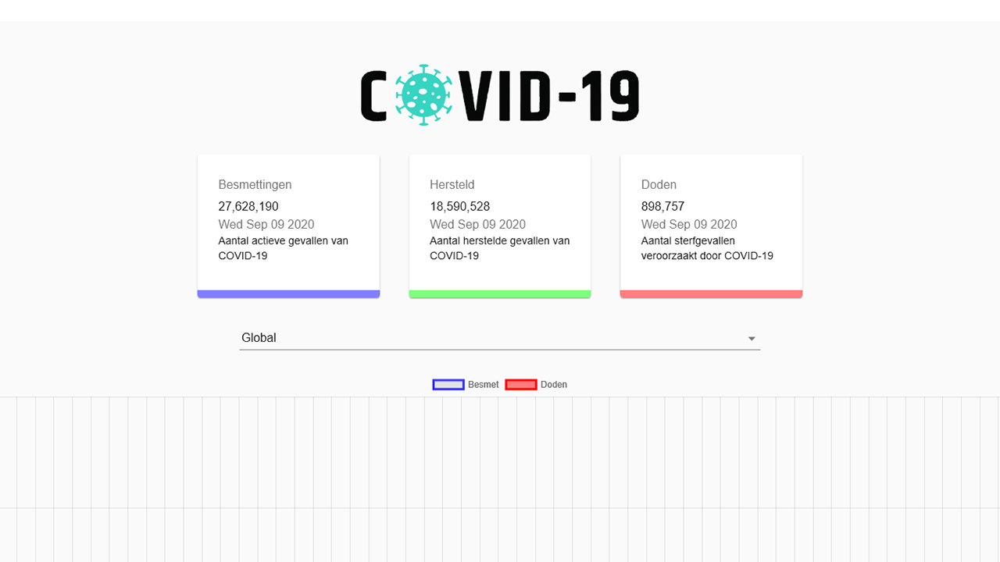

« Back to Posts

ReactJS SocketIo Fetch Covid API Material UI Firebase
Dutch Covid tracker

Yoran Essers
Fullstack DeveloperThis was my first project using a fetch-based API. I really liked working on it and i'm planning to make more API based web-apps.
My first idea of this project was just to learn from it. But I actually made it a public app! (link on the bottom)
The website updates every time the Covid API updates. You can see the data in numbers or in an actual generated Graph.
I used MaterialUI so I didn't have to take much time in designing. I do not think the design is great, but it is definetly not bad at all.
Currently updating it with some new nice features, like a real time map of the world.
Link to the project (it is in Dutch)
Technologies:
- - HTML
- - (S)CSS
- - React JS
- - SocketIO + Express
- - React Smooth Scroll
- - Fetch
- - MaterialUI
- - CovidAPI
- - Google Firebase